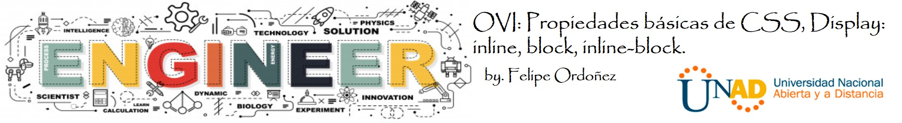

Bienvenidos a la OVI Propiedades Básicas de CSS
Propiedades básicas de CSS, Display: inline, block, inline-block
Bienvenido al Objeto virtual de aprendizaje Propiedades básicas de CSS, Display: inline, block,
inline-block, con el cual tendrás
un acercamiento preliminar a los temas de la Unidad 1: Fase 2 - Diseño.
Motivación es lo que te pone en marcha, el hábito es lo que hace que sigas (Jim Ryun)
Objetivo General
Construir un objeto virtual de aprendizaje (OVA) con el tema Propiedades básicas de CSS, Display: inline, block, inline-block el cual permitirá al usuario que lo consulte tener un acercamiento preliminar de acuerdo con la Unidad 1: Fase 2 - Diseño.
Objetivos especificos
- Objetivo 1: Permitir a los lectores de este Objeto virtual de aprendizaje tener un acercamiento a los concepto básicos de los estilos CSS.
- Objetivo 2: Enseñar de forma simple y clara las diferencias entre las formas de visualización en CSS.
- Objetivo 3: Promover el desarrollo de las competencias necesarias en el estudiante uso básico de los estilos CSS.

Lo que nos dice la U en las redes:
#ComunicadoOficial Procuraduría revocó sanción impuesta al rector de la UNAD, Jaime Alberto Leal Afanador (@JaimeLeal_ ) y lo absolvió de los cargos investigados.
— Universidad UNAD (@UniversidadUNAD) October 24, 2020
Leer más👉🏼 https://t.co/RvfdJxOH3I pic.twitter.com/cse66bpjtb